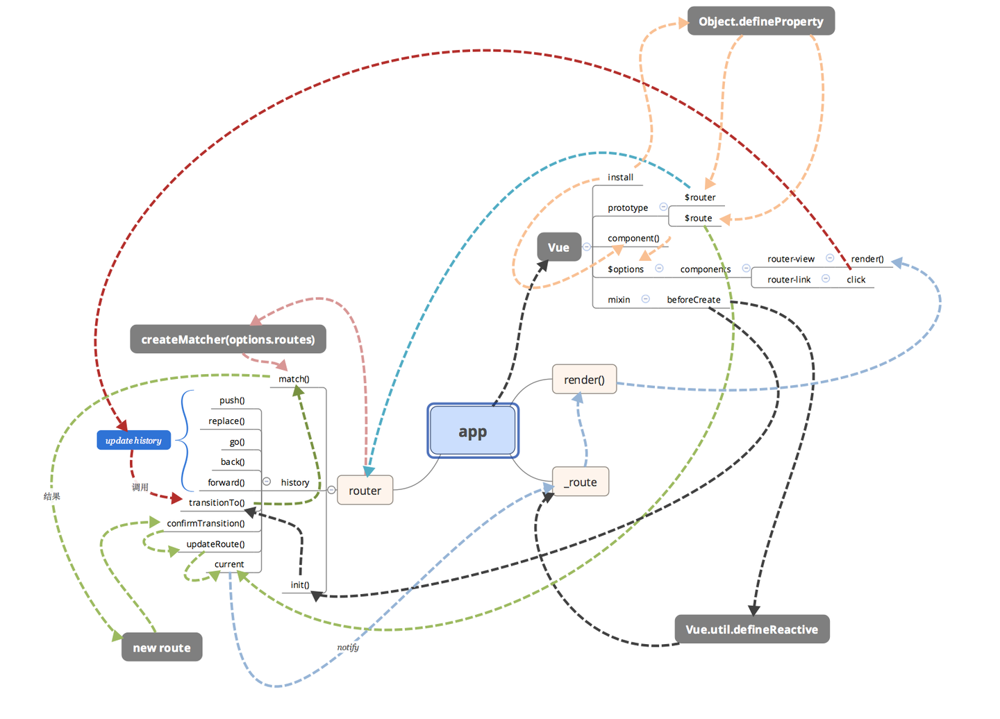

路由概念最早出现在后端
1 | http://www.xxx.com/login |
简单来说,路由就是用来跟后端的一种交互方式,通过不同路径,请求不同资源.
hash模式
随着ajax的流行,页面异步请求交互实现了无刷新,现在单页应用的流行,页面交互和跳转都不用刷新了.单页应用是实现,依赖于前端路由.
前端路由原理很简单,就是通过url的变化,在特定位置渲染需要的页面内容.但url变化都会造成页面刷新,所以出现了通过监听hash变化同时不会引起页面刷新.
1 | // http://www.xxx.com/#/login |
hash的变化不会引起重新请求和页面刷新,通过监听hashchange事件,实现逻辑操作
history模式
history是H5标准,多了两个API,pushState和replaceState,以及监听事件popstate,通过这两个API可以改变url且不发送请求,这种方式没有#,更美观.但刷新页面时,还是会向服务器发请求,此时如果不是根路径,就会404,因此,需要服务端配合,将所有路径重定向到根页面.

vue-router是vue插件,通过两种形式实现前端路由,下面通过源码,分析其中原理逻辑
首先,从VueRouter构造函数入手
1 | const router = new VueRouter({ |
精简代码分析如下
1 | /* @flow */ |
从设置路由改变到视图更新的流程如下：
1 | $router.push() --> HashHistory.push()/HTML5History.push() --> History.transitionTo() --> History.updateRoute() --> {app._route = route} --> vm.render() |
因为两种模式用的api是不同的,所以push,replace的实现肯定也不一样.
1 | // hash模式 |
注意,改变路由的方式还可能直接修改浏览器地址栏url,此时需要监听地址栏,路由跳转方式对应两种模式的replace方法.
hash优势:
如果开发纯本地页面,能够实现路由正常跳转,history模式不行,因为一刷新可能就404了.
history优势:
没有#,比较美观;
pushState设置的新URL可以是与当前URL同源的任意URL；而hash只可修改#后面的部分，故只可设置与当前同文档的URL
pushState设置的新URL可以与当前URL一模一样，这样也会把记录添加到栈中；而hash设置的新值必须与原来不一样才会触发记录添加到栈中
pushState通过stateObject可以添加任意类型的数据到记录中；而hash只可添加短字符串
pushState可额外设置title属性供后续使用
router-view
1 |
|
router-link
1 | export default { |
从vue-router看前端路由的两种实现
vue-router源码分析-整体流程
vue-router 源码分析-history
VueRouter 源码深度解析
前端路由简介以及vue-router实现原理